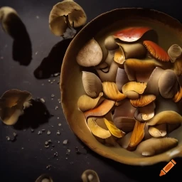

Mystical Moonlit Mushroom Medley

Description
Prepare to be enchanted by the captivating allure of the "Mystical Moonlit
Mushroom Medley." This ethereal dish transports you to a realm where
flavors dance under the enchanting glow of a moonlit sky. Delicate and
earthy chanterelle mushrooms intertwine with the tender strands of enoki
mushrooms, creating a harmonious texture that whispers secrets of the
forest. Maitake mushrooms, clustered in bite-sized formations, offer an
otherworldly charm that is as visually stunning as it is delectable.
With each bite, the aroma of truffle oil caresses your senses, infusing
the medley with a hint of decadence. As you savor the velvety richness,
the flavors of sautéed garlic and shallots weave together, elevating the
mushrooms' essence to new heights. A symphony of fresh thyme and parsley
adds a gentle herbal melody, while the vibrant red bell peppers and
julienne carrot bring bursts of color and a delightful crunch. Topped with
a sprinkle of stardust, this captivating dish invites you to embark on a
gastronomic journey through the mystical moonlit forest, where every
forkful holds a touch of enchantment.
Ingredients
- 250 grams chanterelle mushrooms (cleaned and sliced)
- 200 grams enoki mushrooms (ends trimmed)
- 150 grams maitake mushrooms (separated into bite-sized clusters)
- 1 tablespoon truffle oil
- 2 tablespoons unsalted butter
- 4 cloves garlic (minced)
- 1 shallot (finely chopped)
- 1 cup vegetable broth
- 1/4 cup white wine
- 1 tablespoon fresh thyme leaves
- 1 tablespoon fresh parsley (chopped)
- Salt and pepper to taste
- Edible flower petals (for garnish)
Steps
-
In a large skillet, melt the butter over medium heat. Add the minced
garlic and finely chopped shallot, and sauté until fragrant and lightly
golden.
-
Add the chanterelle, enoki, and maitake mushrooms to the skillet.
Stir-fry for about 5 minutes, or until the mushrooms are tender and
start to release their aromatic flavors.
-
Drizzle the truffle oil over the mushrooms and continue to stir-fry for
another minute, ensuring that the mushrooms are evenly coated with the
luxurious essence of truffles.
-
Pour the white wine into the skillet and cook for a minute or two,
allowing the alcohol to evaporate and leaving behind a delicate hint of
its flavor.
-
Gradually add the vegetable broth to the skillet, stirring gently to
combine all the ingredients. Simmer the mixture for 5-7 minutes until
the broth reduces slightly and coats the mushrooms with a luscious
glaze.
-
Sprinkle in the fresh thyme leaves and chopped parsley, and season with
salt and pepper to taste. Stir everything together, infusing the dish
with herbal notes and a balanced seasoning.
-
Remove the Mystical Moonlit Mushroom Medley from the heat and transfer
it to a serving dish. Garnish with colorful edible flower petals, which
add a touch of whimsy and visual appeal.
-
Serve this enchanting dish as a side to grilled meats, atop creamy
polenta, or as a filling for savory pastries. Allow yourself to be
transported to a world of magical flavors with every bite.